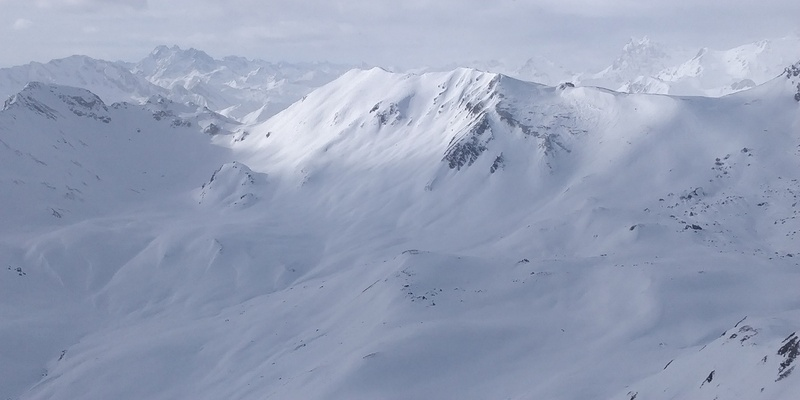
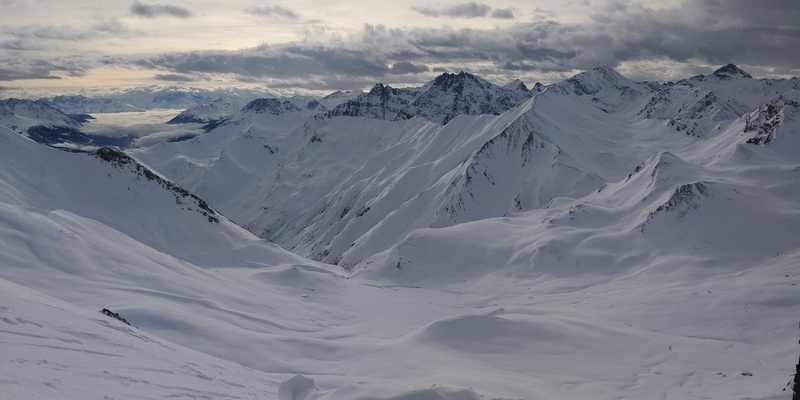
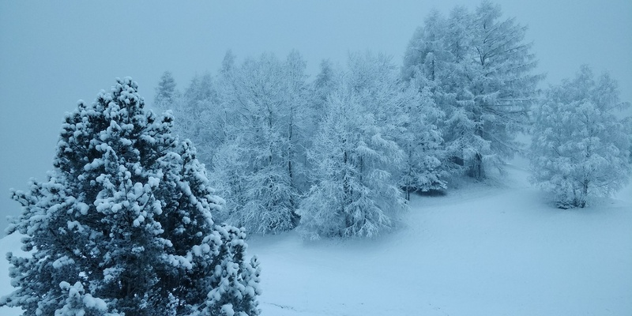
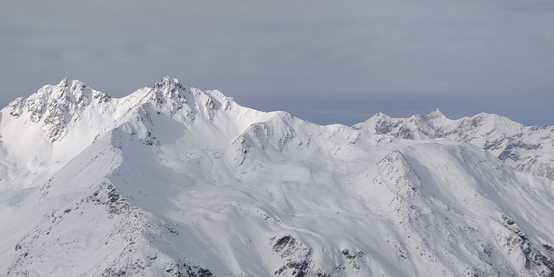

full-res-image (1.9 MB)
speed min: 0.0 km/h max: 91.4 km/h avg: 11.8 km/h
altitude min: 1269m max: 2878m avg: 2028m
vertical down: 8133m up: 8152m total: 16285m
distance down: 47.2km up: 31.0km total: 78.0km
misc. runs: 20 min slope: 8.4° max slope: 16.8°
Nice in the morning, some snow and clouds around the mid of the day and icy conditions at the end.
gpx track

full-res-image (2.7 MB)
speed min: 0.0 km/h max: 86.9 km/h avg: 12.5 km/h
altitude min: 1275m max: 2862m avg: 2075m
vertical down: 9051m up: 9034m total: 18085m
distance down: 52.0km up: 35.1km total: 87.1km
misc. runs: 21 min slope: 10.7° max slope: 26.0°
Really full in the morning, got better in the afternoon. Weather wise ok, got kind of dark in the afternoon.
gpx track

full-res-image (3.8 MB)
speed min: 0.0 km/h max: 75.0 km/h avg: 14.2 km/h
altitude min: 1274m max: 2549m avg: 2070m
vertical down: 9958m up: 9709m total: 19667m
distance down: 55.0km up: 36.8km total: 91.8km
misc. runs: 22 min slope: 11.6° max slope: 47.5°
New snow, resulting in really bad viewing conditions with perfect riding conditions. Stayed like that all day long.
gpx track

full-res-image (2.3 MB)
speed min: 0.0 km/h max: 106.0 km/h avg: 17.3 km/h
altitude min: 1333m max: 2868m avg: 2118m
vertical down: 13985m up: 13788m total: 27773m
distance down: 71.5km up: 47.3km total: 118.7km
misc. runs: 27 min slope: 12.2° max slope: 61.9°
The conditions were perfect in the morning, grippy snow and no ice. Until around 14:30, there were almost no clouds and a lot of sun, then the weather got cloudier and the contrast dropped.
gpx track